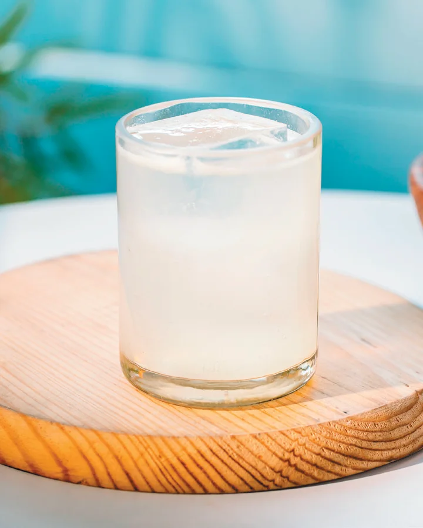

Blanco · Shaken
Tommy’s Margarita
The modern classic, De Nada style Made with De Nada BlancoIngredients
- 2 oz De Nada Blanco
- 1 oz Fresh Lime Juice
- ½ oz Agave Nectar
Method
Combine all ingredients in a shaker with plenty of ice; shake hard for 15 seconds. Strain into a rocks glass over fresh ice and garnish with a lime wedge. Salt rim strictly optional; good tequila doesn’t need the mask. No orange liqueur, no fuss. The Blanco does the talking.